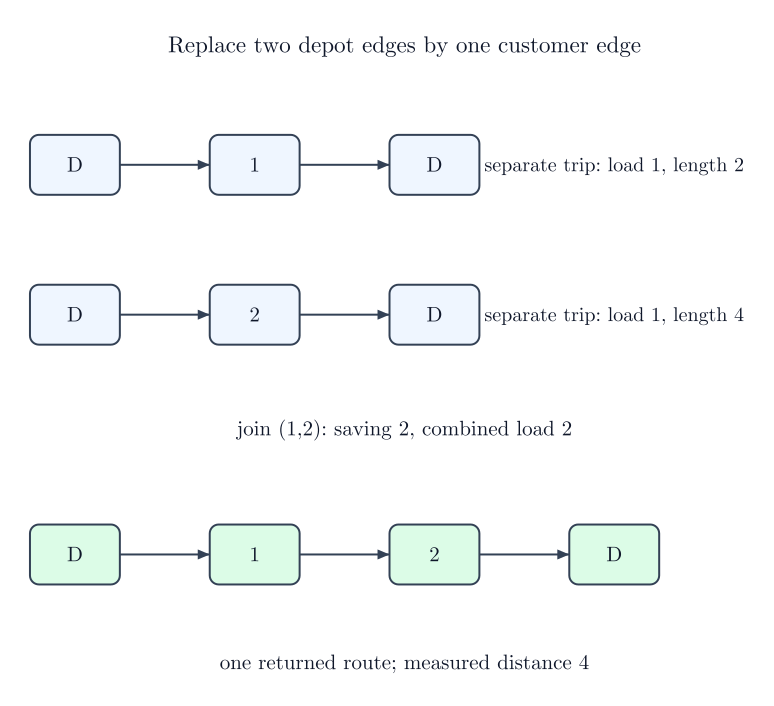
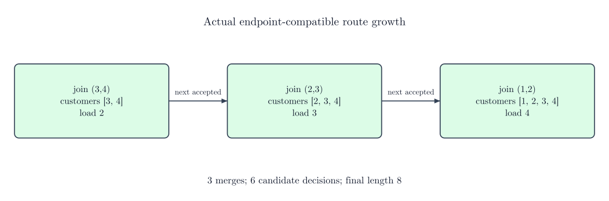
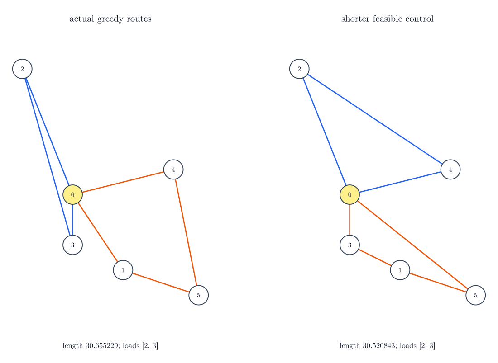
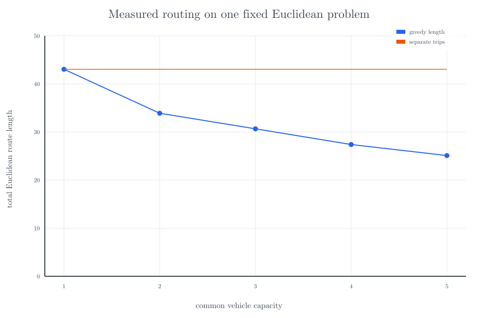

Clarke–Wright Savings: Building Capacity-Feasible Delivery Routes
Abstract
Given a depot, customer locations, demands and a common vehicle capacity, find closed delivery routes that serve each customer once without overloading a vehicle. The number of possible partitions and visit orders makes exact search expensive. Clarke–Wright savings starts with separate depot trips and greedily joins compatible route endpoints. We retain the original three-point example, inspect actual native decisions and distance savings, and exhibit a small Euclidean problem where a different feasible routing is shorter. Checked C++ validation, independent route evaluation and complete work caps make the demonstrated contracts explicit without turning the heuristic into an optimizer.
The original example: replacing two depot trips
Let the depot be vertex 0 at (0,0), with customers 1 and 2 at (1,0) and (2,0). Each customer demands one unit, and capacity is two. Separate routes 0→1→0 and 0→2→0 have total distance 2+4=6. Joining the customers replaces edges 1→0 and 0→2 by edge 1→2, reducing distance by 1+2−1=2. The returned route 0→1→2→0 has load two and distance four.
The native diagram is an itinerary, not a geographic map: positions separate visits so both initial routes and the accepted concatenation remain readable. The merged customer order and cost accounting come from the executing kernel.
#include <dm/dm.hpp>
int main() {
std::filesystem::create_directories("build");
const auto trace=dm::algorithms::clarke_wright_trace({{0,0},{1,0},{2,0}},{0,1,1},2);
const auto& step=trace.steps[0];
std::print("| original route result | value |\n| :--- | :--- |\n| closed route | {} |\n| route load | {} |\n| initial separate-trip length | {} |\n| accepted saving | {} |\n| measured final length | {} |\n",trace.result.routes[0],trace.route_loads[0],trace.initial_star_distance,trace.accepted_savings,trace.result.total_distance);
dm::graphics::Diagram figure(60,1100);
dm::graphics::DiagramNodeStyle node;node.width=1.5;node.height=1.0;node.font_size=21;
for(int row=0;row<2;++row) {
const int customer=row+1;const double y=3.0-2.5*row;
for(int visit=0;visit<3;++visit) {
const auto id=std::format("before{}_{}",row,visit);
figure.node(id,{3.0*visit,y},visit==1?std::to_string(customer):"D",node);
if(visit)figure.edge(std::format("before{}_{}",row,visit-1),id);
}
figure.text({9,y},std::format("separate trip: load 1, length {}",2*customer),20);
}
node.fill={220,252,231};const auto& route=trace.result.routes[0];
for(std::size_t visit=0;visit<route.size();++visit) {
const auto id=std::format("after{}",visit);
figure.node(id,{3.0*visit,-3.5},route[visit]?std::to_string(route[visit]):"D",node);
if(visit)figure.edge(std::format("after{}",visit-1),id);
}
figure.text({5.5,5},"Replace two depot edges by one customer edge",23)
.text({5.5,-1.4},std::format("join ({},{}): saving {}, combined load {}",step.i,step.j,step.saving,step.load_i+step.load_j),21)
.text({5.5,-5.3},std::format("one returned route; measured distance {}",trace.result.total_distance),21)
.save_svg("build/clarke_wright_method.svg");
if(trace.result.routes.size()!=1 || trace.result.total_distance!=4)return 1;
}| original route result | value |
|---|---|
| closed route | [0, 1, 2, 0] |
| route load | 2 |
| initial separate-trip length | 6 |
| accepted saving | 2 |
| measured final length | 4 |

The saving formula and the parallel variant
For symmetric Euclidean distances d, consider distinct routes ending at i and starting at j. Reversing a route changes no undirected edge lengths. Remove their depot edges and insert edge ij. The reduction in total distance is
Triangle inequality makes this saving nonnegative in exact Euclidean arithmetic. The implementation caches depot distances, constructs every unordered customer pair, and sorts descending by its widened saving, breaking equal savings by ascending original pair ids (i,j). It processes zero savings too, and does not filter tiny rounded negative savings. Rounded arithmetic is not an exact triangle-inequality or monotone-distance certificate.
This is the parallel savings variant: the whole sorted pair list is considered once while many routes may grow. A pair can merge only if both customers are currently endpoints of distinct routes and their combined load fits capacity. After orientation, route_i ends at i and route_j starts at j; concatenation retains slot route_i and clears slot route_j. Stable slots are assigned in ascending customer-id order, excluding the chosen depot. Final routes appear in ascending surviving-slot order and receive depot boundaries at the end.
The model uses a common finite positive capacity and finite nonnegative demands. Each customer demand must fit individually. The depot demand is validated but ignored, and a depot-only problem needs no route. Zero-demand customers are still customers and must be visited. There is no fixed fleet size, delivery splitting, time window, road network, improvement phase or optimality guarantee.
Why the returned routes are feasible
Initially every customer forms its own route, so uniqueness and individual capacity hold. An accepted merge joins two disjoint customer sequences at endpoints, preserving every visit exactly once; rejecting interior endpoints prevents branching within a route. Requiring distinct routes prevents a premature customer-only cycle. The checked load sum preserves capacity. Adding depot visits closes each surviving route. This induction explains feasibility; it does not show that the chosen partition or visit order is best.
If S is the sum of accepted savings, the exact-arithmetic accounting identity is
The trace records both this accounting and a fresh final edge sum, with their widened residual. The ordinary and traced calls share one executing kernel; recording does not replay merges. Widened geometry and loads are checked before finite-double final cost storage. Last-bit costs and earlier unspecified tie choices can therefore differ from the old unchecked implementation.
Endpoint decisions on four collinear customers
Put four unit-demand customers at x=1,2,3,4 with depot x=0 and capacity four. The best initial saving is six for pair (3,4), followed by the tied savings four for (2,3) and (2,4). The first two joins build sequence [2,3,4]; pair (2,4) is rejected because its endpoints already share that route. After joining customer 1, pair (1,3) is rejected because customer 3 is interior.
The table contains every actual decision. The diagram retains accepted orders only, and its arrows mean the next accepted merge; rejected pairs are not hidden from the table. Original-id tie ordering makes this walkthrough reproducible.
#include <dm/dm.hpp>
int main() {
std::filesystem::create_directories("build");
const auto trace=dm::algorithms::clarke_wright_trace({{0,0},{1,0},{2,0},{3,0},{4,0}},{0,1,1,1,1},4);
std::print("| pair | saving | endpoint slots | reason | committed customer order |\n| :--- | ---: | :--- | :--- | :--- |\n");
dm::graphics::Diagram figure(55,1100);
dm::graphics::DiagramNodeStyle style;style.width=5.8;style.height=2.8;style.font_size=19;style.fill={220,252,231};
std::size_t accepted=0;
for(const auto& step:trace.steps) {
const auto reason=step.decision==dm::algorithms::ClarkeWrightDecision::Merged?"merged":step.decision==dm::algorithms::ClarkeWrightDecision::MissingEndpoint?"interior endpoint":step.decision==dm::algorithms::ClarkeWrightDecision::SameRoute?"same route":"capacity";
std::print("| ({},{}) | {:.1f} | {}, {} | {} | {} |\n",step.i,step.j,step.saving,step.route_i?std::to_string(*step.route_i):"absent",step.route_j?std::to_string(*step.route_j):"absent",reason,step.merged_customers);
if(step.decision!=dm::algorithms::ClarkeWrightDecision::Merged)continue;
const auto id=std::format("merge{}",accepted);
figure.node(id,{8.0*accepted,0},std::format("join ({},{})\ncustomers {}\nload {:.0f}",step.i,step.j,step.merged_customers,step.load_i+step.load_j),style);
if(accepted)figure.edge(std::format("merge{}",accepted-1),id,"next accepted");
++accepted;
}
figure.text({8,3},"Actual endpoint-compatible route growth",23)
.text({8,-3},std::format("{} merges; {} candidate decisions; final length {}",trace.work.merges,trace.work.decisions,trace.result.total_distance),20)
.save_svg("build/clarke_wright_endpoints.svg");
std::print("\nInitial length {}; accepted savings {}; measured length {}; accounting residual {:.2e}.\n",trace.initial_star_distance,trace.accepted_savings,trace.measured_distance,trace.accounting_residual);
}| pair | saving | endpoint slots | reason | committed customer order |
|---|---|---|---|---|
| (3,4) | 6.0 | 2, 3 | merged | [3, 4] |
| (2,3) | 4.0 | 1, 2 | merged | [2, 3, 4] |
| (2,4) | 4.0 | 1, 1 | same route | [] |
| (1,2) | 2.0 | 0, 1 | merged | [1, 2, 3, 4] |
| (1,3) | 2.0 | 0, absent | interior endpoint | [] |
| (1,4) | 2.0 | 0, 0 | same route | [] |
Initial length 20; accepted savings 12; measured length 8; accounting residual 0.00e+00.

A shorter feasible routing that greedy savings misses
Consider the six labelled points below, depot 0, unit customer demands and capacity three. The heuristic returns routes [0,2,3,0] and [0,4,5,1,0], with total length about 30.655229. The alternative routes [0,2,4,0] and [0,3,1,5,0] serve the same customers at the same feasible loads and total about 30.520843. This strict improvement is enough to disprove global optimality of the greedy result. A development-test oracle also enumerates all customer permutations and route cuts for this tiny problem and finds that same shorter minimum. No exact optimization is implemented inside the report or production solver.
Native evaluate_vehicle_routes independently checks supplied route closure, every customer occurrence, missing customers, repeated visits, interior depot visits, capacity and consecutive-edge distance. In-range structural defects return counts with feasible=false; invalid vertex ids and invalid original problem data throw. The alternative is an explicit finite control, not a general replacement solver. The diagram uses actual planar coordinates, with the same scale in both panels; crossing line segments need not be route visits.
#include <dm/dm.hpp>
int main() {
std::filesystem::create_directories("build");
const std::vector<std::pair<double,double>> points{{0,0},{2,-3},{-2,5},{0,-2},{4,1},{5,-4}};
const std::vector<double> demand{0,1,1,1,1,1};
const auto heuristic=dm::algorithms::clarke_wright_savings(points,demand,3);
const std::vector<std::vector<std::size_t>> alternative{{0,2,4,0},{0,3,1,5,0}};
dm::graphics::Diagram figure(60,1100);
std::print("| routing | route | load | feasible whole routing | total length |\n| :--- | :--- | ---: | :--- | ---: |\n");
for(int panel=0;panel<2;++panel) {
const auto& routes=panel?alternative:heuristic.routes;
const auto metrics=dm::algorithms::evaluate_vehicle_routes(points,demand,3,routes);
if(!metrics.feasible)return 1;
const double shift=11.0*panel;
for(std::size_t r=0;r<routes.size();++r) {
std::print("| {} | {} | {:.0f} | {} | {:.9f} |\n",panel?"shorter control":"greedy savings",routes[r],metrics.route_loads[r],metrics.feasible,metrics.total_distance);
std::vector<dm::graphics::DiagramPoint> path;
for(const auto v:routes[r])path.push_back({points[v].first+shift,points[v].second});
dm::graphics::DiagramStroke stroke;stroke.width=2.8;stroke.color=r?dm::RGB{234,88,12}:dm::RGB{37,99,235};
figure.path(path,stroke);
}
dm::graphics::DiagramNodeStyle node;node.circle=true;node.width=0.55;node.height=0.55;node.font_size=16;
for(std::size_t v=0;v<points.size();++v) {
node.fill=v?dm::RGB{255,255,255}:dm::RGB{254,240,138};
figure.node(std::format("p{}_{}",panel,v),{points[v].first+shift,points[v].second},std::to_string(v),node);
}
figure.text({shift+1.5,7},panel?"shorter feasible control":"actual greedy routes",22)
.text({shift+1.5,-6},std::format("length {:.6f}; loads {}",metrics.total_distance,metrics.route_loads),18);
}
figure.save_svg("build/clarke_wright_counterexample.svg");
const auto shorter=dm::algorithms::evaluate_vehicle_routes(points,demand,3,alternative);
if(heuristic.total_distance<=shorter.total_distance)return 1;
}| routing | route | load | feasible whole routing | total length |
|---|---|---|---|---|
| greedy savings | [0, 2, 3, 0] | 2 | true | 30.655228771 |
| greedy savings | [0, 4, 5, 1, 0] | 3 | true | 30.655228771 |
| shorter control | [0, 2, 4, 0] | 2 | true | 30.520842859 |
| shorter control | [0, 3, 1, 5, 0] | 3 | true | 30.520842859 |

Capacity changes: measured routes, not a monotonicity theorem
Increasing capacity enlarges the feasible set, so the exact optimum cannot increase. A greedy constructor can make different earlier choices, however; that set-inclusion argument does not prove monotonicity of its returned length or vehicle count. The next sweep reports actual outcomes on the same six points. The horizontal orange line is the separate-trip star length, measured by the native trace for every call. It is a reference for this Euclidean example, not a global approximation bound.
#include <dm/dm.hpp>
int main() {
std::filesystem::create_directories("build");
const std::vector<std::pair<double,double>> points{{0,0},{2,-3},{-2,5},{0,-2},{4,1},{5,-4}};
const std::vector<double> demand{0,1,1,1,1,1};
std::vector<double> capacity,length,star;
std::print("| capacity | returned vehicles | measured length | accepted merges | feasible |\n| ---: | ---: | ---: | ---: | :--- |\n");
for(int cap=1;cap<=5;++cap) {
const auto trace=dm::algorithms::clarke_wright_trace(points,demand,cap);
const auto metrics=dm::algorithms::evaluate_vehicle_routes(points,demand,cap,trace.result.routes);
if(!metrics.feasible)return 1;
capacity.push_back(cap);length.push_back(trace.result.total_distance);star.push_back(trace.initial_star_distance);
std::print("| {} | {} | {:.9f} | {} | {} |\n",cap,trace.result.routes.size(),trace.result.total_distance,trace.work.merges,metrics.feasible);
}
auto plot=dm::graphics::RPlot::create();
plot.line(capacity,length,"returned",{37,99,235},2).points(capacity,length,"returned",{37,99,235},5)
.line(capacity,star,"separate trips",{234,88,12},1.5)
.legend({"greedy length","separate trips"},{{37,99,235},{234,88,12}})
.title("Measured routing on one fixed Euclidean problem")
.x_label("common vehicle capacity").y_label("total Euclidean route length")
.x_limits(0.8,5.2).y_limits(0,50).save_svg("build/clarke_wright_capacity.svg");
}| capacity | returned vehicles | measured length | accepted merges | feasible |
|---|---|---|---|---|
| 1 | 5 | 43.033891891 | 0 | true |
| 2 | 3 | 33.890326157 | 2 | true |
| 3 | 2 | 30.655228771 | 3 | true |
| 4 | 2 | 27.390800391 | 3 | true |
| 5 | 1 | 25.093632509 | 4 | true |

Exact logical work and complete-call limits
For m customers there are C=m(m−1)/2 savings pairs. This implementation scans all m original route slots for every pair, even after routes are absorbed, so endpoint_slot_visits=Cm=m²(m−1)/2 exactly. Savings storage is O(m²); sorting costs O(m² log m), and slot lookup costs O(m³). Reversals and concatenations add at most O(m²) work over m−1 accepted merges. Recording every decision and only accepted merged sequences adds O(m²) owned storage, not a full partition copy at every pair. Counter values are not elapsed time or a complete CPU cost.
The distance-evaluation count is m+C+(m+k), where k is the final vehicle count: cached depot distances, pair distances, then final closed-route edges. Sorting comparisons are counted as executed and may depend on the standard library. Complete pair and endpoint forecasts are checked after full input validation and before candidate allocation. A positive decision cap limits tracing only; zero caps mean unlimited. No partial result escapes a cap, range or allocation failure. These safeguards do not accelerate cubic lookup.
#include <dm/dm.hpp>
int main() {
const std::vector<std::pair<double,double>> points{{0,0},{1,0},{2,0},{3,0},{4,0}};
const std::vector<double> demand{0,1,1,1,1};
dm::algorithms::ClarkeWrightOptions options;options.max_savings_pairs=6;options.max_endpoint_visits=24;options.max_decisions=6;
const auto trace=dm::algorithms::clarke_wright_trace(points,demand,4,0,options);
std::print("Actual pairs {}; endpoint-slot visits {}; final edges {}; distance evaluations {}; sorting comparisons {}.\n\n",trace.work.savings_pairs,trace.work.endpoint_slot_visits,trace.work.output_edges,trace.work.distance_evaluations,trace.work.sort_comparisons);
bool pair=false,lookup=false,records=false,validation=false;
options.max_savings_pairs=5;
try { (void)dm::algorithms::clarke_wright_trace(points,demand,4,0,options); }catch(const std::length_error&) { pair=true; }
options.max_savings_pairs=6;options.max_endpoint_visits=23;
try { (void)dm::algorithms::clarke_wright_trace(points,demand,4,0,options); }catch(const std::length_error&) { lookup=true; }
options.max_endpoint_visits=24;options.max_decisions=5;
try { (void)dm::algorithms::clarke_wright_trace(points,demand,4,0,options); }catch(const std::length_error&) { records=true; }
options.max_savings_pairs=1;
try { (void)dm::algorithms::clarke_wright_trace(points,{0,1,1,1,-1},4,0,options); }catch(const std::invalid_argument&) { validation=true; }
std::print("| preflight case | expected rejection observed |\n| :--- | :--- |\n| pair cap one below exact | {} |\n| lookup cap one below exact | {} |\n| trace cap one below exact | {} |\n| malformed final demand before cap | {} |\n",pair,lookup,records,validation);
const auto boundary=dm::algorithms::clarke_wright_trace({{0,0},{1,0},{2,0}},{0,0.1,0.2},0.3);
std::print("\nLiteral 0.1+0.2 against literal capacity 0.3: {} returned vehicles.\n",boundary.result.routes.size());
const auto blocked=dm::algorithms::clarke_wright_trace({{0,0},{1,0},{2,0},{10,0}},{0,1,1,1},2);
std::size_t capacity_rejections=0;for(const auto& step:blocked.steps)capacity_rejections+=step.decision==dm::algorithms::ClarkeWrightDecision::CapacityExceeded;
std::print("Three unit customers at capacity two: {} actual capacity rejections; {} vehicles.\n",capacity_rejections,blocked.result.routes.size());
const double x=0.4*std::numeric_limits<double>::max();
const auto wide=dm::algorithms::clarke_wright_trace({{0,0},{x,0},{x,0}},{0,1,1},2);
std::print("Initial star exceeds double maximum: {}; merged final distance is finite: {}.\n",wide.initial_star_distance>std::numeric_limits<double>::max(),std::isfinite(wide.result.total_distance));
if(!pair || !lookup || !records || !validation)return 1;
}Actual pairs 6; endpoint-slot visits 24; final edges 5; distance evaluations 15; sorting comparisons 11.
| preflight case | expected rejection observed |
|---|---|
| pair cap one below exact | true |
| lookup cap one below exact | true |
| trace cap one below exact | true |
| malformed final demand before cap | true |
Literal 0.1+0.2 against literal capacity 0.3: 2 returned vehicles. Three unit customers at capacity two: 2 actual capacity rejections; 2 vehicles. Initial star exceeds double maximum: true; merged final distance is finite: true.
Capacity comparison has no undocumented epsilon. Stored double literals 0.1 and 0.2 sum in widened arithmetic to slightly more than stored double 0.3, so those two customer loads do not merge at that literal capacity. Integer demand units, when natural to the application, make such boundaries easier to specify. NaNs, infinities, negative demands, invalid depot ids and individually excessive customer demands reject. Final costs outside finite double range throw; a widened intermediate star can exceed that range when the merged result fits.
The seventeen new native tests pass address and undefined-behaviour sanitizers. An independent deque-based route representation checks every sorted decision, orientation, load, accepted order, final edge and named count across 1,926 line/depot/capacity cases and 1,000 seeded random Euclidean problems. Exhaustive permutation-and-cut enumeration checks 100 additional small routing problems and the fixed shorter-route control. Other cases cover exact and one-below caps, validation before limits, zero demands, depot-only input, nonzero depot ids, owned snapshots, malformed proposed routes and wide arithmetic. Synthetic geometry suits these exact checks; no external dataset is needed here.
What the analysis establishes
Savings joins preserve feasibility under the stated model and explain each distance reduction in exact arithmetic. The native trace exposes actual endpoint and capacity decisions, while independent route evaluation checks the returned or proposed solution. Deterministic ordering and full validation make the small examples repeatable, with bounded requested work. The six-point control demonstrates the remaining optimization gap: feasible greedy routes need not be the shortest routes.
References
- G. Clarke and J. W. Wright (1964), Scheduling of Vehicles from a Central Depot to a Number of Delivery Points, Operations Research 12(4), 568–581, https://doi.org/10.1287/opre.12.4.568. The implementation follows the simple parallel savings variant with endpoint and capacity tests, rather than all possible extensions or improvement procedures.
- Canonical contracts and execution: include/datamunge/algorithms/clarke_wright.hpp and src/datamunge/algorithms/clarke_wright.cpp. The legacy tour_search.hpp include remains supported. All complete figure programs above are editable C++.